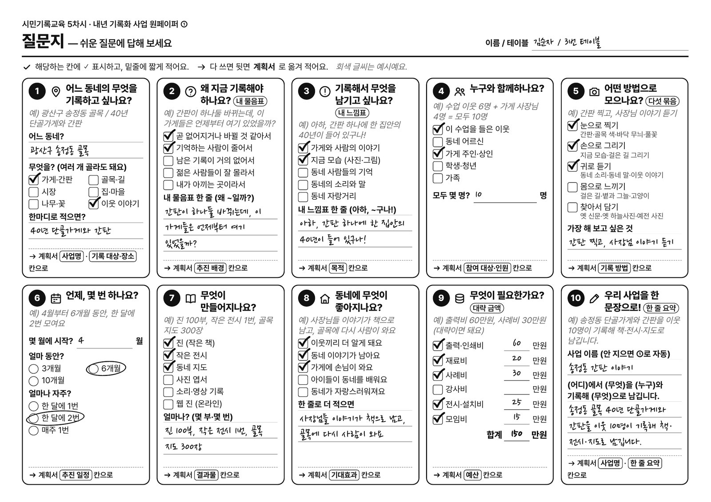
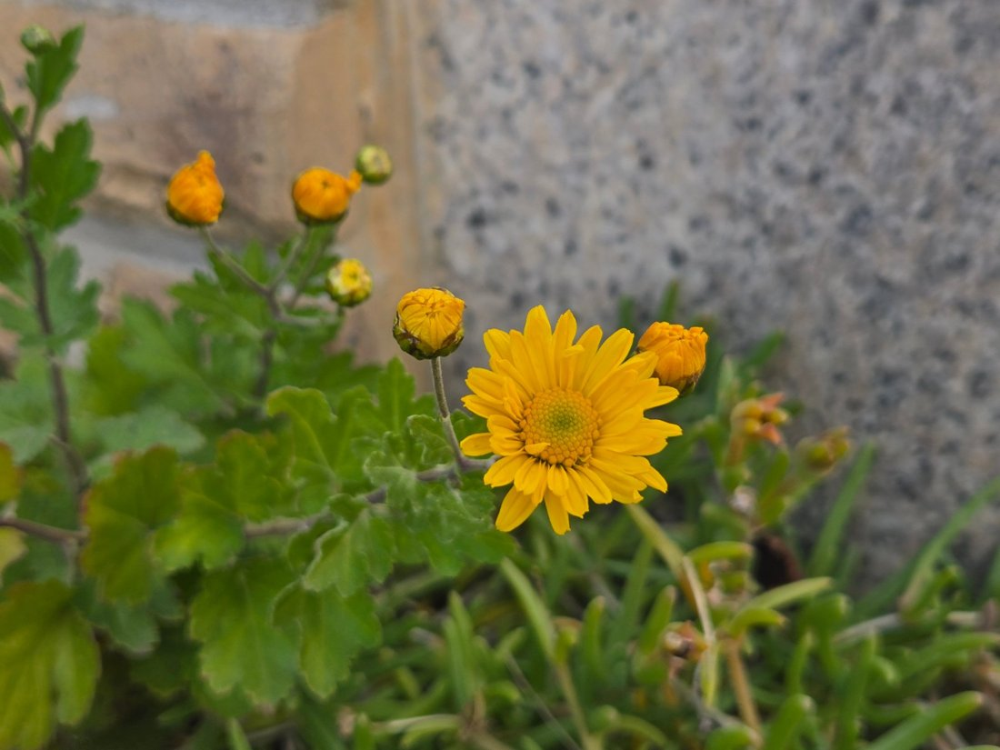
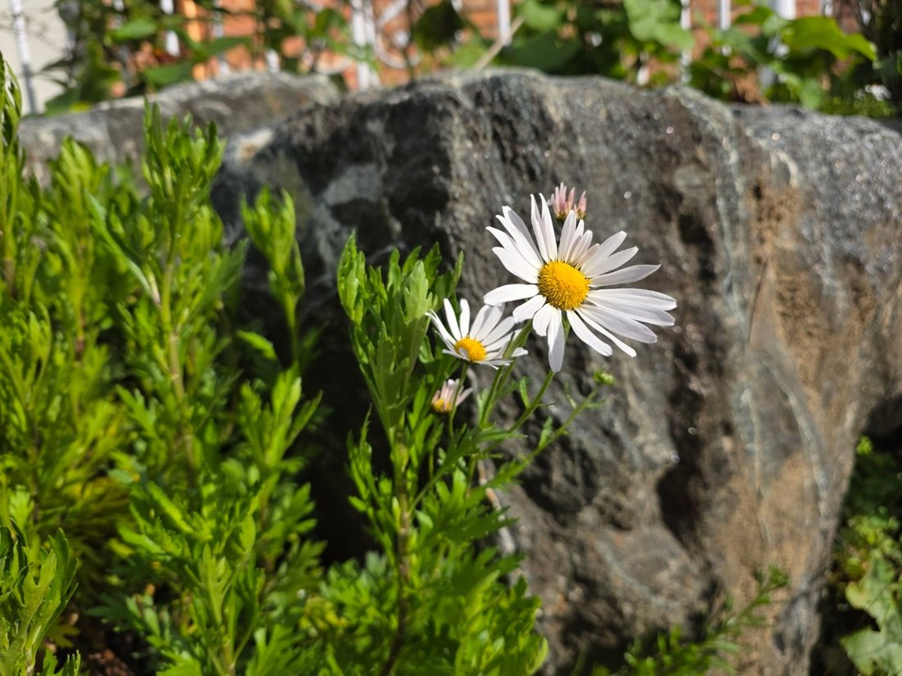

SESSION 05 · 출판과 공유, 그리고 수료
내 책 접기 →
테이블 공유 →
원페이퍼 → 수료
신흥동행정복지센터 2층 · 14:00 – 15:30
TODAY · 오늘 할 일
오늘은 이렇게 해요.
- ①웹 진 A3 출력물 접어 8쪽 책 만들기14:00
- ②테이블별로 내 책 나누기14:10
- ③우리 경험으로 원페이퍼 사업계획서14:30
- ④쉬는 시간15:00
- ⑤수료증 수여식 · 마무리15:10
14:00 – 15:30
GOAL · 학습목표
오늘이 끝나면
이렇게 할 수 있어요.
- 01웹 진 출력물을 접어 내 책 8쪽을 완성해요.
- 02테이블에서 내 책을 소개하고, 이웃의 책에 한 마디를 건네요.
- 03세 번의 수업에서 해 본 것을 바탕으로 원페이퍼 사업계획서를 써요.
BOOK · 책 만들기
웹 진 출력물을
8쪽 책으로.
- 01가로로 반 → 다시 반 → 다시 반, 8칸 자국 내기
- 02가운데 두 칸 사이만 가위로 칼집
- 03세로로 길게 반 접어 양 끝을 밀면 십자 모양
- 041쪽(표지)이 맨 앞에 오게 정리
가운데 선에서 손가락 한 마디만큼만 가위를 넣으세요.


SHARE · 테이블 공유
테이블별로
내 책 나누기.
- 01한 사람 2분 · "한 줄 소개" + 제일 마음에 드는 한 쪽
- 02듣는 분은 ? 하나, ! 하나로 한 마디
같은 길을 걸어도 책은 다 달라요!

LOOK BACK · 우리가 해 본 것
세 번의 수업이
사업계획서의 재료예요.
- ?3차시 · 내 사진에서 찾은 물음표 → 왜 지금 기록해야 하나요?
- !3차시 · "아하, ~구나" 느낌표 → 무엇을 남기고 싶나요?
- →4차시 · 산책에서 써 본 방법 → 어떤 방법으로 모으나요?
- ▦4·5차시 · 웹 진과 8쪽 책 → 무엇이 만들어지나요?
처음부터 새로 생각하지 말고, 해 본 것을 옮겨 적어요.
ONE PAPER · 원페이퍼
우리 경험으로
원페이퍼 사업계획서.
질문 10개에 쉬운 말로 답하면 사업계획서 한 장이 돼요.
이번 경험을 바탕으로 나만의 계획안을 써봐요.
다 못 채워도 괜찮아요.
다 쓰면 "이미지로 저장" → 내 사진첩에!
ONE PAPER · 이렇게 나와요
사업명부터 예산까지
한 장에.
사업명 · 한 줄 요약 · 추진 배경 · 목적 · 대상 · 방법 · 일정 · 결과물 · 기대효과 · 예산
다 만들면 선생님 화면으로 저절로 보내져요.

BREAK
쉬는 시간.
책을 책상 위에 펼쳐 두고 다른 테이블 책도 구경해요.
CERTIFICATE · 수료
수료증
수여식.
내 책과 함께 들고 단체 사진도 찍어요.
다섯 번의 수업, 정말 수고 많으셨어요!
THANK YOU
고맙습니다.
수고하셨습니다.
사소한 것을 발견하는 힘을
함께 꺼냈어요.

